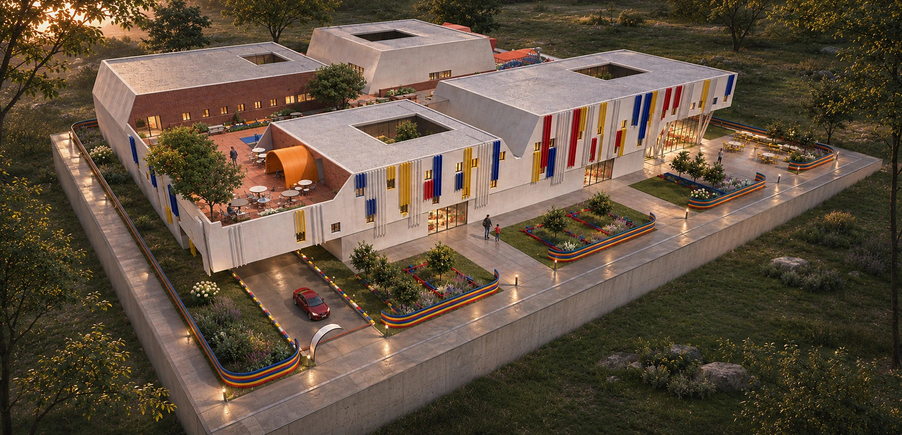
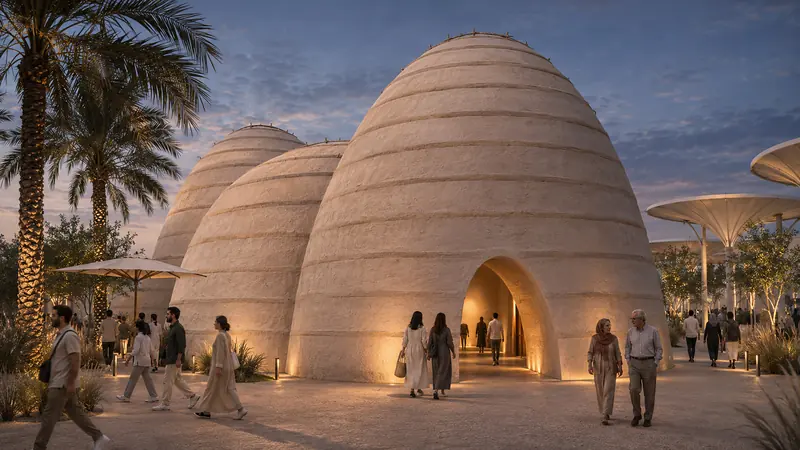

Children Hospital
Concept
Inspired by LEGO blocks, the project explores modular forms, varied volumes, and vibrant colors to create a playful, child-friendly architectural identity. The concept aims to transform the hospital from a purely clinical environment into a welcoming and engaging space that supports children’s emotional well-being and recovery. Through the integration of natural light, green spaces, play areas, and healing gardens, the design establishes a connection between architecture, nature, and the needs of young patients and their families.
Project film
Plays when it scrolls into view. Pick a scene to jump straight to it.
Patient and Staff Circulation Diagram
Spatial Relationship Diagram
Drawings
Plans, sections and elevations. Click to open; click again or scroll to zoom.
Perspective
AI-assisted visualisations based on the original model, at the same views as the original portfolio.
Model
More views
7 further views of the project, based on the original plans, sections and model. The original drawings remain authoritative.

Next project — 04